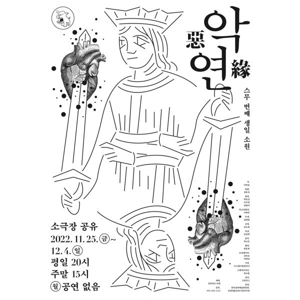

이하슬 작, 정유진 연출

크리스마스, 초은동에서 모친 살해 사건이 벌어진다. 친모를 살해한 혐의로 입건된 시연은 입을 열지 않는다. 망상 속에서 그녀는 정신과 의사 케이트가 되어 환자 다이아나를 돌보고 동료 의사 패런과 신경전을 벌이지만, 현실의 비극은 그녀의 머릿속까지 흘러 들어온다. 아동학대 피해자이자 존속살인을 저지른 사람과, 학대를 방관하거나 잊어버린 이들이 함께 살고 있는 시대의 단면을 망상과 현실이 겹치는 장면들로 그린다.
2022.11.25–12.4 / 소극장 공유
작: 이하슬
연출: 정유진
무대: 김혜림
조명: 김소현
의상: 김경희
음악: 박고은
촬영: 한문희
오퍼레이터: 강마로, 이해성
기획: 스탭서울
그래픽디자인: 워크룸
출연: 박유진, 이지원, 정양아
목소리 출연: 이예주
지원: 한국문화예술위원회 공연예술중장기창작지원
이전: 〈홈스윗홈2-버려진 아이들〉 | 다음: 〈Fake News 2022-MAPHIKO〉
아카이브로 돌아가기